Especies
En las siguientes imagenes estan algunas de las Especies nativas
Arbol
Anacahuita.
(Blepharocalyx salicifolius)
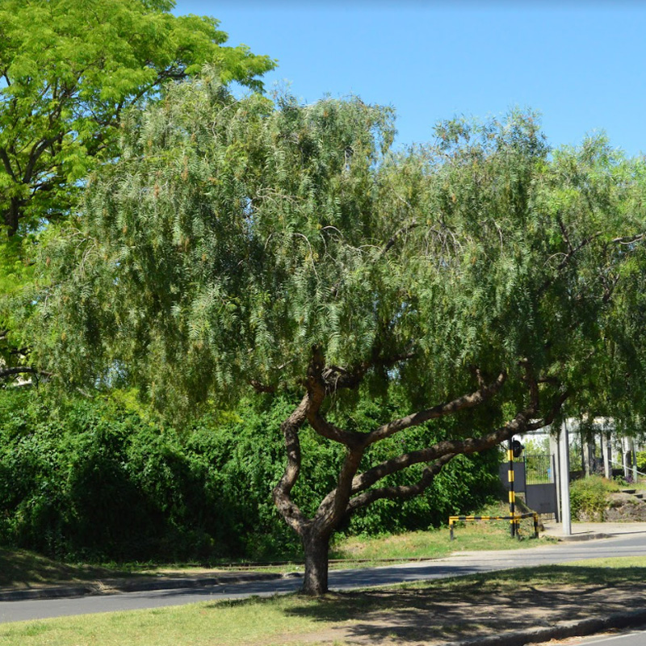Flor (fruto)
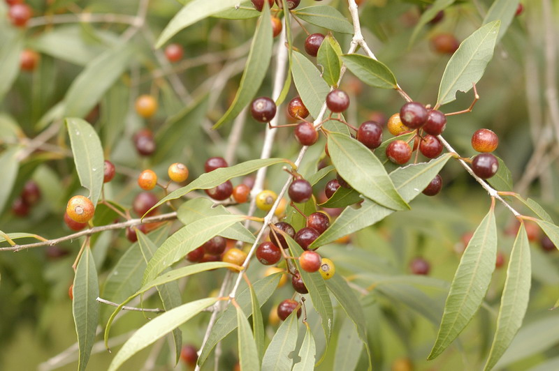 Ecorregion: Delta e Islas del Paraná
Interacciones biologícas: La mariposa polibio sangrante y aves frugívoras.
Usos: Se suelen usar en parques y jardines urbanos. Tiene también usos medicinales.
Atractivos: Follaje y fructificación, flores abundantes y frutos de color rojo-anaranjado.
Arbol
Ceibo
(Erythrina crista-galli)
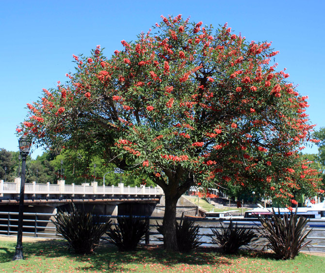Flor (Flor nacional)
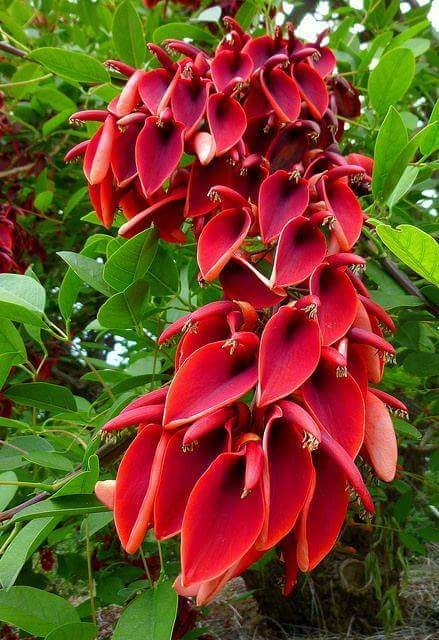 Ecorregion: Delta e islas del Paraná.
Interacciones biologicás: Soporte de plantas epifitas y sus flores son polinizadas por abejorros y picaflores.
Usos: En parques urbanos amplios, bordes de cursos o espejos de agua Tolera suelos contaminados.
Atractivos: Floracion, considerada Flor nacional.
Arbol
Chañar
(Geoffroea decorticans)
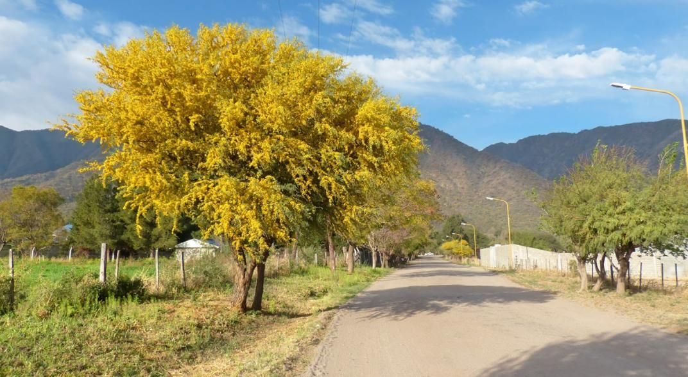Flor
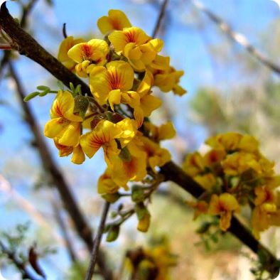 Ecorregion: Espinal.
Interecciones biologicás: Mariposa saltarina, escarabajos, dispersado por animales de gran porte como el lagarto overo.
Usos: En parques amplios,agrupados en macizos.
Atractivos: Destaca por floración abundante y proterante.
Arbol
Epinillo
(Vachellia caven)
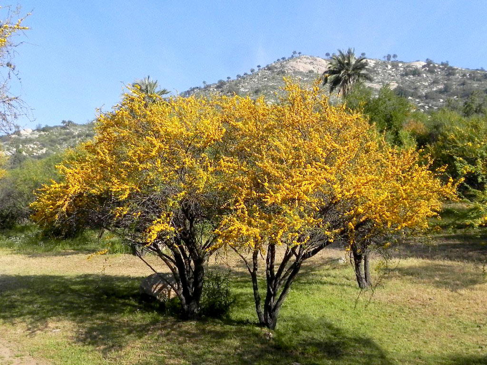Flor
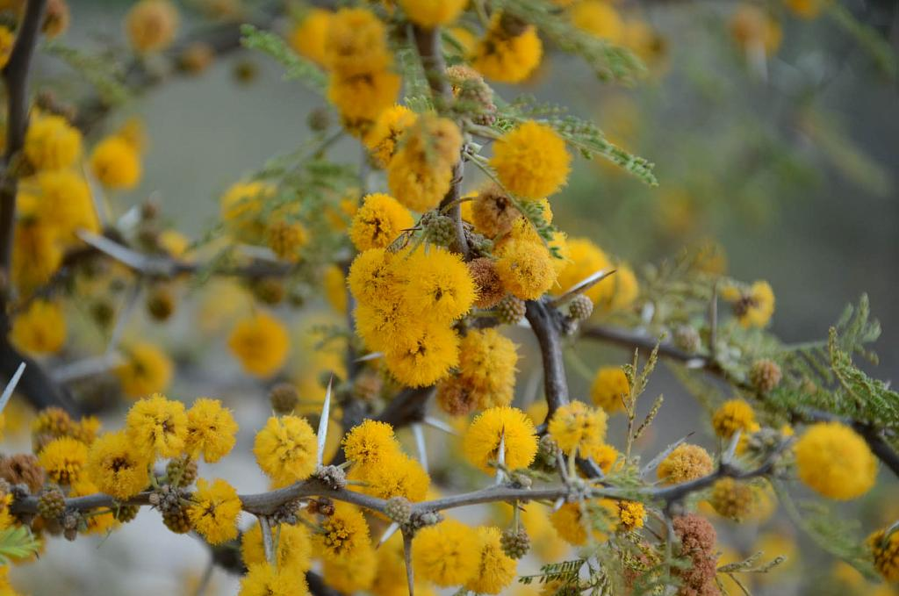 Ecorregion: Espinal
Interacciones biologicás: Escarabajos de la familia bruchidae y mariposa danzarina chica.
Usos: En espacios públicos considerando que tiene espinas. También usos medicinales y su madera es utilizada como combustible y en la fabricación de carbón.
Atractivos: Destaca por floracion proterante, abuendante y perfumada.
Arbol
Jacaranda
(Jacaranda mimosifolia)
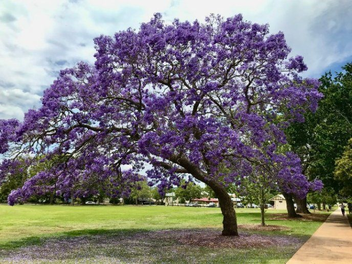Corredor Jacaranda

Flor
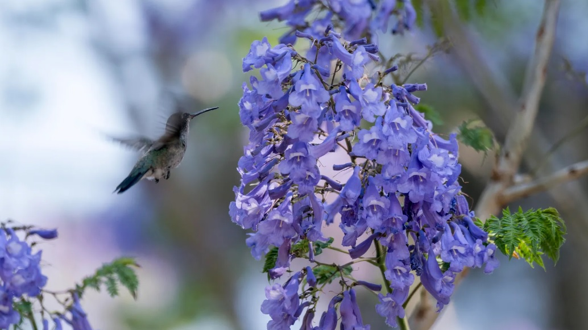Ecorregion: subtropical.
Interacciones biologicás: Flores polinizadas por Picaflores.
Usos: En plazas y parques publicos. Se usa para hacer corredores.
Atractivos: Se destaca por su floracion abundante y perfumada.
Arbol
Lapacho
(Handroanthus impetiginosus)
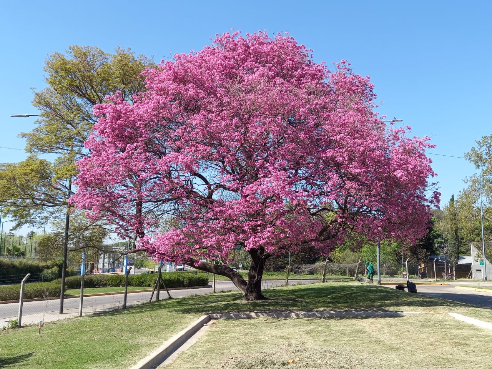Flor
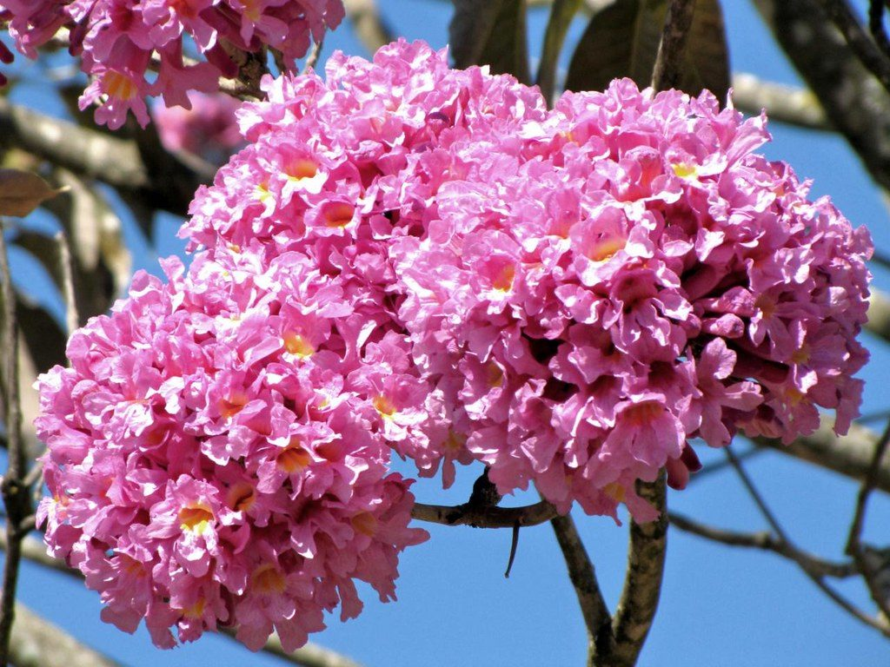Ecorregion: Argentina suelos arenosos y húmedos
Interacciones biologicás: Polinizado por picaflores y abejorros.
Usos: En parques y plazas, también para usos medicinales.
Atractivos: Destaca por su floracion.
Arbol
Molle
(Schinus longifolius)
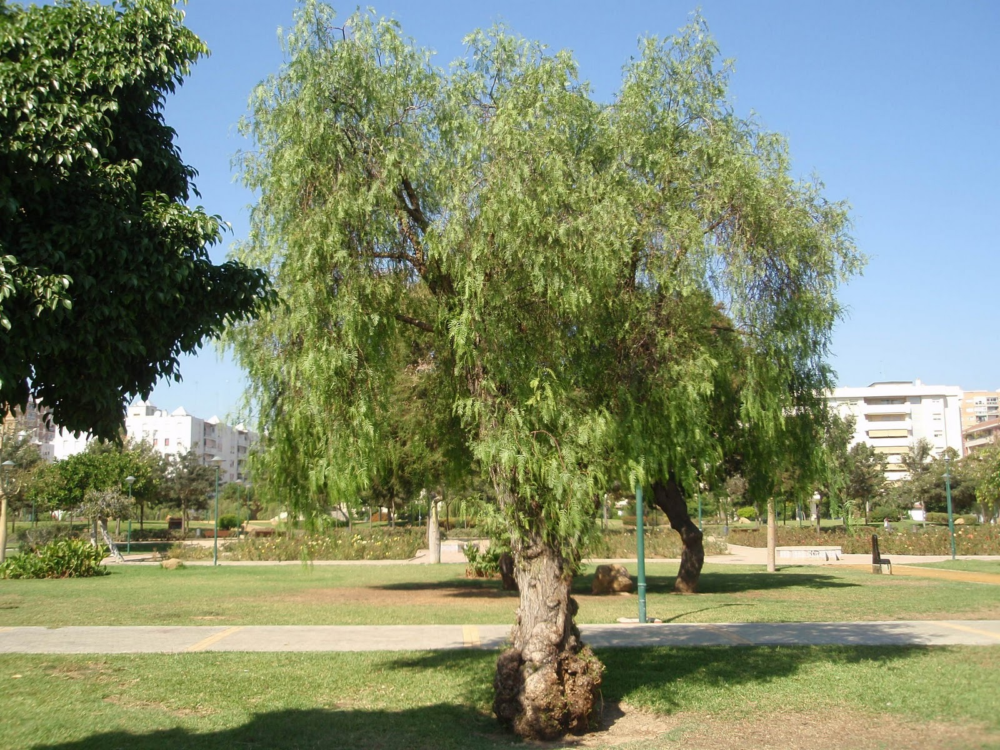Flor (fruto)

Ecorregion: Espinal.
Interacciones biologicás: Aves frugívoras, insectos polinizadores.
Usos: En parques públicos amplios. También es utilizado en cercos vivos.
Atractivos: Destaca por porte y textura del follaje.
Arbol
Sen del campo
(Senna corymbosa)

Flor

Ecorregion: Espinal
Interacciones biologicás: Planta nutricia de Mariposa limoncito, Mariposa saltarina, Mariposa lechera grande, Mariposa febo, aves insectivoras como la tacuarita Azul.
Usos: en parques y jardinesurbanos. Raices, hojas y cortezas tienen usos medicinales.
Atractivos: Destaca por porte y floracion.
Arbol
Timbo
(Enterolobium contortisiliquum)
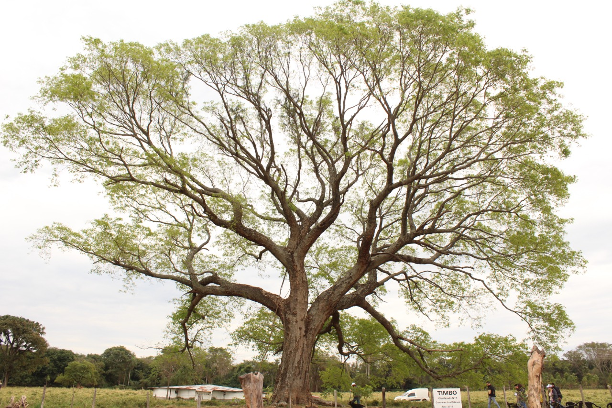Flor (fruto)

Ecorregion: Subtropical
Interacciones biologicás: Aves frugívoras que esparcen sus frutos donde dentro de ellos se encuentran sus semillas.
Usos: En espacios verdes de gran tamaño.
Atractivos: Destaca por su gran tamaño, que llega a alcanzar los 30 m de altura y un diámetro de 2 metros.
Arbol
Tipa
(Tipuana tipu)

Flor

Ecorregion: Selva de los yungas
Interacciones biologicás: Insecto llamado chicharrita de la espuma. Este bicho tiene una aguja flexible y delgada con la que pincha los brotes más tiernos de las tipas para beber la savia.
Usos: En las zonas urbanas es frecuente en calles anchas, avenidas, paseos y también en jardines por su magnífica floración amarilla y su muy buena sombra.
Atractivos: Se destaca por su gran porte, llegando hasta 40 m de altura y diámetro de 1,50 m.
Flores hermafroditas, largamente pediceladas, color amarillo dorado con estrías moradas o rojizas,